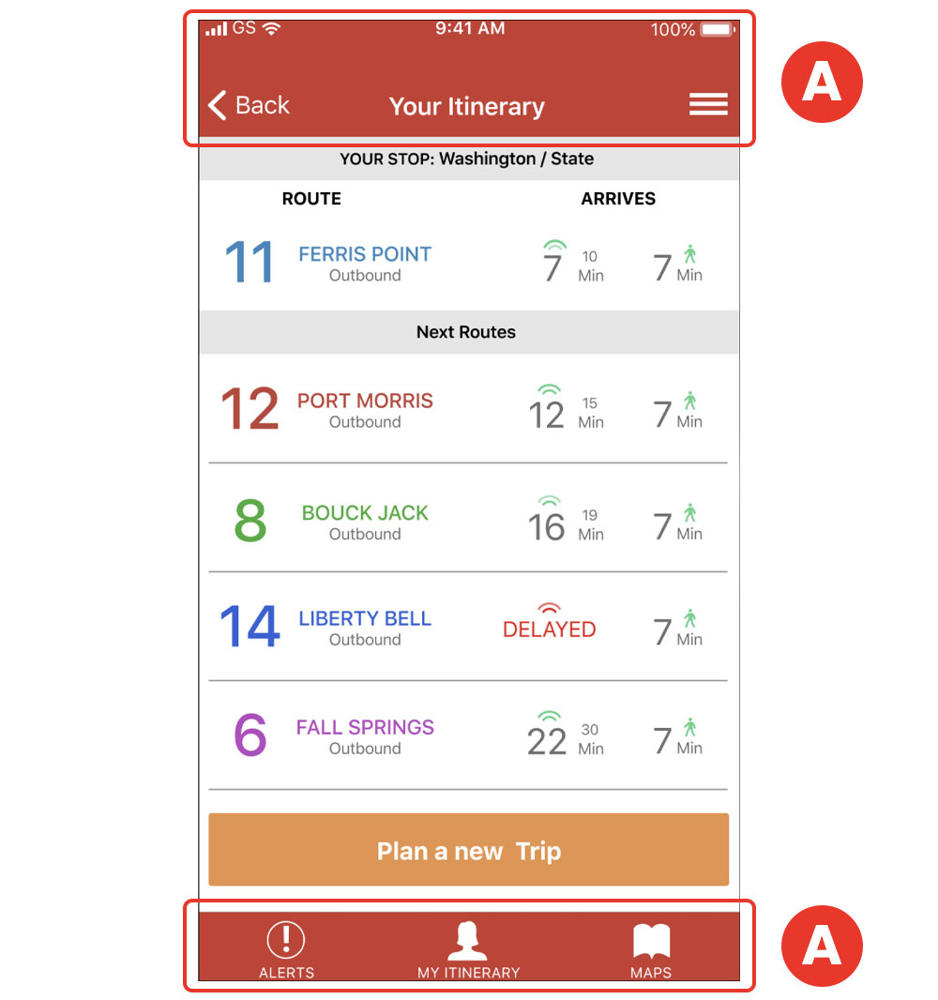

Survey
To kick off this project, I created an 18-questions survey focused on the need of the riders. I wanted to find out their pain points either in case they already use a transit app or not.
Some of the results were as follows:
Due to expansion, numerous bus routes of a mid-size city have been recently added and many of those routes stop at the same bus stop. Riders want to know what the next arriving bus is and how much time they have to get to the bus stop. Simply rushing to the stop when a bus is coming no longer works because it might not be the bus the rider is expecting.
This app solves the problem by providing 2 key pieces of information to the users, arrived at by research and testing: 1) What is the next arriving bus, and 2) How much time the user has to get to the bus stop.
BusyBus is an application operated by the local city transit system that serves thousands of commuters in a large city, putting at their availability real-time bus arrival information.

To kick off this project, I created an 18-questions survey focused on the need of the riders. I wanted to find out their pain points either in case they already use a transit app or not.
Some of the results were as follows:
85% Need their bus to be on time.
68% Of the participants take the bus.
62% Ride the bus as part of their commute to get to work.
70% Of the responders affirmed that they need to know when the next bus will arrive.
92% Live 5 minutes away from their bus stop.
77% Of participants expressed that they need to know if there are delays on the route.
To get to know what transit apps BusyBus would be competing against, I performed a competitive analysis of 2 apps: Moovit and Transit.
These are some key points I got from the research:
This app is well established in the market. It has a very effective message to identify itself from the competition. It offers a “next arriving bus” feature as well as an “estimate time for bus arrival” feature. As a threat to the app, I found out that there’s a lot of competition in the market, something that this app has to keep in mind even though is well established.
This app is also well-known by users. It presents itself very clear and easy to identify among the competition. Among the many features, it too offers “next arriving bus” and “estimate time for bus arrival”. During the time I downloaded it to try it out, I found it a little confusing by its many features.
To create user stories, I concentrated on the features that the app should have based on the main concerns and findings from the survey. I work mainly on all the stories that I deemed “high priority”, but I also included 2 “medium priority stories” to come out with a well-rounded MVP.
| Role | Tasks | Importance |
|---|---|---|
| As a user | I want to know what is the next arrving bus | High |
| As a user | I want to know how much time I have to get to the arriving bus | High |
| As a user | I want to know in how many minutes my bus is coming | High |
| As a user | I want to know if there are delays on my route | Medium |
| As a user | I want to edit my route | Medium |
| As a user | I want to get directions to go to a new place | Medium |
| As a user | I want to get alerts about my commute | Medium |
| As a user | I want to know what other routes are nearby | Low |
| As a user | I want to know the weather | Low |
| As a user | I want to log into my account | Low |

I set up to sketch 3 screens:
I wanted to put into paper my first raw ideas and after some testing and iteration, change the design accordingly to the feedback that I would receive.
Initial sketches for the 3 main screens
I took the rough sketches that I initially did and tried to refine them further in preparation for user testing. I planned to test directly the paper prototypes since this would give me the freedom and speed to make any changes based on the user feedback. I had to design the paper prototypes a couple of times because I wanted to make it look as presentable as possible so the sketch itself won't distract from the main actions that I wanted the user to take when testing it.
After this was done, I tested it with 3 participants. My main goal during testing was that the iterations were easy to use that the user could perform the task successfully. These were the pain points and changes I found after testing:
A tester interacting with a paper prototype
Before:
To inform the user of other route options, I added the feature "Nearby Stops" A . But upon further research and consultation with my mentor acting as a product manager, we came up with the conclusion that the user didn't need to move to another stop to catch a bus All the buses would stop at the same stop (that was part of the problem in the first place that the app was trying to solve).
After:
I changed it to read "Next Bus" B . Upon further iterations though, the better and more clear term "Next Routes" was decided on.
Before:
On the navigation menu, I was planning to use icons for the buttons A .
After:
After the user testing, I discovered that it would be more clear if I added labels to accompany the icons. B
After making the changes based on the user’s feedback, I was ready to work on the branding. I selected 1 screen (the “Incoming Buses”) to concentrate and apply the branding. This screen would also be coded for a high-resolution prototype. Even though I concentrated on this screen, I kept in the back of my mind the thinking that the branding will be applied to the other screens as the project develops. After applying the branding, I met with my mentor acting as a product manager and got some feedback.
Before:
I searched around for inspiration to pick a color palette that would go well with the branding. I chose a warm palette and concentrated on the orange spectrum. A . but during the review with my mentor acting as a product manager, he pointed out that that color combination would cause the user to get agitated since orange is a vibrant color.
After:
He guided me to chose a more cool palette that will calm the user. After some color theory research, I decided on a blue hue instead. I think this was a very good change since will transmit stability and calmness to the user waiting for a bus at any time. B.
Before:
This app would get from a feed various types of data, and it would change according to the bus line and bus status. When I placed the route number, destination, and time of arrival, I placed all that information center aligned. But this would cause problems later on when the data changes. A
After:
To fix this potential problem, I left aligned all the main information. B This would prevent any problem when the data changes according to the bus route.
Before:
I placed a button "Plan a new Trip" with the understanding that the user could start a new trip from this screen. A
After:
Upon further review with my mentor acting as a product manager, we came up with the decision that this was not a trip planner app, so we decided not to include this feature. B
Having completed the branding and the changes after testing, I embarked on the development. Before starting to code, I sketched on paper and planned how I would approach the layout visually to properly translated it into code. This helped me to spend less time figuring out how to position various elements since I had the idea beforehand. I used GitHub to store the code and also hand-coded it from scratch using HTML and CSS. I mainly used “float” layout to position the elements.
Paper skeching to translate into code
After the screen was coded, I presented it to my mentor acting as a product manager for review and approval. This was the feedback I got:
Before
I used gray to convey certain information (bus direction and time). Upon final review, it was discovered that the contrast of the gray against the white background would not pass an accessibility test. A
After
I chose a darker shade of gray based on a color test, and it passed the test (Contrast Ratio 8.59:1) B
This project was very exciting for me because it gave me the opportunity to design a digital product using a UX process properly for the first time. I learned to “trust the process”, and correct issues when necessary to bring out a product that could be both enjoyable and usable. This project also helped to see how important is to think more inline with data feed, for example, how will this information behave or look when the information coming from a database is different than the content that I currently have? I also learned about the importance of keeping focus and stick to the MVP when is necessary to guide the project. More features can always be added later on.
Given more time, I would have loved to produce the other screens, and maybe bring the paper prototype onto a digital environment where I can test remotely with other users or present the prototype in a medium that could look like an actual device.
All in all, I believe that everything I learned during this project can and will be applied to future and bigger projects.